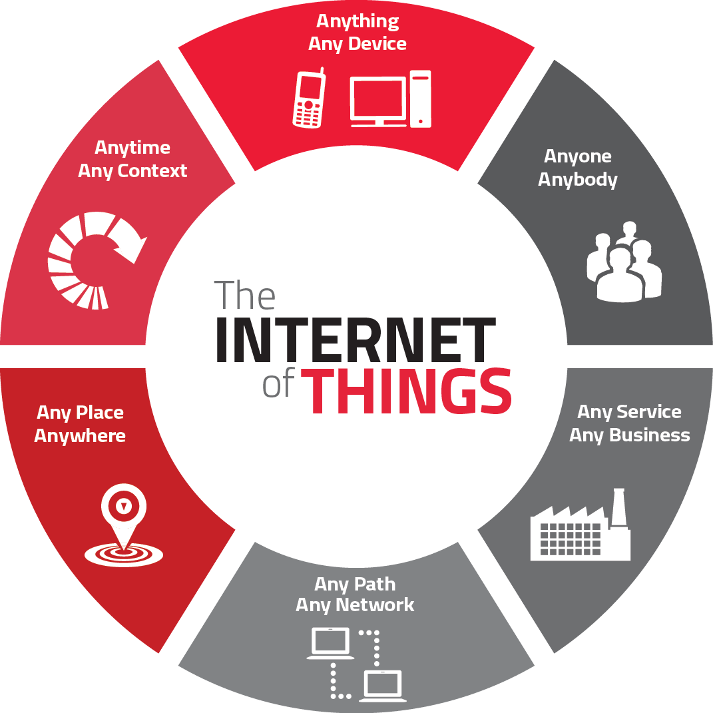

IOT + Node-RED
Prototyping tool for IOT
by Ibrahim / ibhi
What is IOT

If you think that the internet has changed your life, think again. The IoT is about to change it all over again! - Brendan O’Brien, Chief Architect & Co-Founder, Aria Systems
What is Raspberry Pi
VIDEO
https://www.youtube.com/watch?v=e0wkVVVLvR8
The Raspberry Pi is a low cost, credit-card sized computer that plugs into a computer monitor or TV, and uses a standard keyboard and mouse. It is a capable little device that enables people of all ages to explore computing, and to learn how to program in languages like Scratch and Python. It’s capable of doing everything you’d expect a desktop computer to do, from browsing the internet and playing high-definition video, to making spreadsheets, word-processing, and playing games.
What’s more, the Raspberry Pi has the ability to interact with the outside world, and has been used in a wide array of digital maker projects, from music machines and parent detectors to weather stations and tweeting birdhouses with infra-red cameras. We want to see the Raspberry Pi being used by kids all over the world to learn to program and understand how computers work.
Getting Started with Node-RED
MQTT
http://mqtt.org/
MQTT was developed by Andy Stanford-Clark (IBM) and Arlen Nipper (Eurotech; now Cirrus Link) in 1999 for the monitoring of an oil pipeline through the desert. The goals were to have a protocol, which is bandwidth-efficient and uses little battery power, because the devices were connected via satellite link and this was extremely expensive at that time.
The protocol uses a publish/subscribe architecture in contrast to HTTP with its request/response paradigm. Publish/Subscribe is event-driven and enables messages to be pushed to clients. The central communication point is the MQTT broker, it is in charge of dispatching all messages between the senders and the rightful receivers. Each client that publishes a message to the broker, includes a topic into the message. The topic is the routing information for the broker. Each client that wants to receive messages subscribes to a certain topic and the broker delivers all messages with the matching topic to the client. Therefore the clients don’t have to know each other, they only communicate over the topic. This architecture enables highly scalable solutions without dependencies between the data producers and the data consumers.
Demo
 http://mqtt.org/
http://mqtt.org/